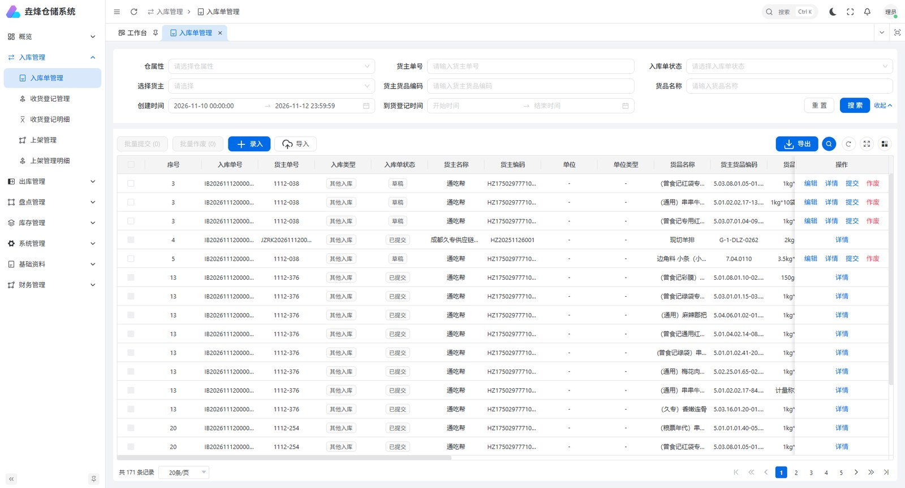
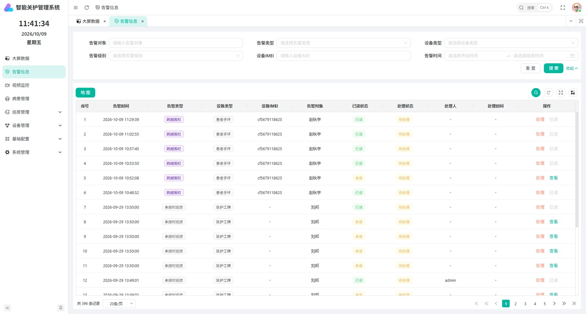
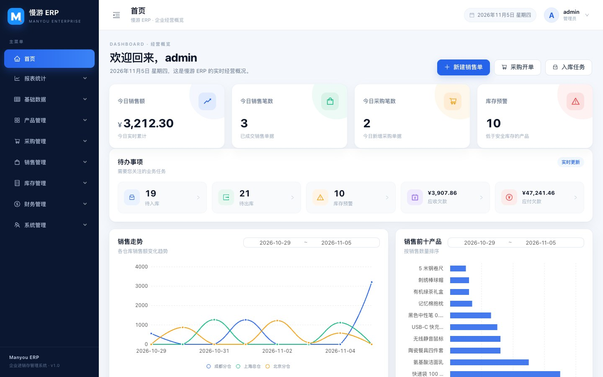

把行业流程
做成可交付系统。
九个已落地的行业系统：客运生产、物流运输、仓储供应链、商贸流通、徒步文旅、公共文化、病区关护与消息中台。它们共用一套微服务骨架，差异留在业务层。

案例索引
01 — 09华客行
四端协同的城市交通出行一体化平台
面向城际出行与旅游客运的一体化乘客服务平台，覆盖旅游直通车、包车、交通车、汽车票四类产品。后台、用户、司机、调度四端共用一套运力与订单数据，把产品配置、班次排班、订单调度、司机执行到结算营销串成一条完整链路。
- 产品与站点配置
- 平台站点、线路、班次按所属区域维护，支持上下架与分销模式
- 多业务统一下单
- 旅游直通车、包车、交通车、汽车票进入同一订单体系
- 运力与调度
- 车辆、司机排班派单，调度端集中处理线路与包车订单
- 司机执行与上报
- 司机端接单、发车、行程上报，闭环回到调度端
- 运营与财务
- 营销活动、评价体系、财务结算与经营数据看板

客运生产管理系统
以包车业务为主线的生产经营系统
以包车业务为主线的生产型管理系统。业务员、调度、财务、管理四类角色在 PC 端协同完成录单、调度与结算，运客管移动端承接外勤工单，运智驾供司机接单、发车与收款，三端配合跑通包车业务全流程。
- 订单录入与补录
- 客户、联系人、用车日期、行程模板与每日行程分段录入
- 车辆调度
- 调度模式、班段调度、运力需求与已调车辆统一编排
- 结算与回款预警
- 待处理结算单、退款单、逾期订单与回款截止日预警
- 报表与经营看板
- 车辆运行统计、订单应收款统计、运行工单数实时呈现
- 移动外勤与司机执行
- 外勤处理工单；司机接单、发车执行、司机收款
食汇通
PC 与 PDA 双端的食品仓储管理系统
面向食品仓储场景的 WMS。PC 端管理货品、库区与客户基础资料，完成入库、出库、盘点与货品转移；PDA 端在库内完成移动收货与发货。系统同时提供效期预警、库存与报表查询以及财务收款，实现仓储业务的全流程管控。
- 入库管理
- 按货主与货品编码登记到货，批量提交、导入与打印入库单
- 出库管理
- 出库单生成、状态跟踪与发货确认
- 盘点作业
- 盘点计划、盘点单与差异核对
- 库存与效期
- 库位库存、效期预警、临期与过期库存统计
- 货品转移与财务
- 库区之间货品转移；收款登记与库存报表

智能关护管理系统
病区患者安全照护的三端一体方案
面向医院病区患者安全照护的智能平台。以手环、工牌、基站与摄像头为感知层，把室内外融合定位、健康体征监测、电子围栏、告警处置、查房巡视与视频监控连成闭环，为院内提供可落地的智慧安全关护能力。
- 患者档案与出入院
- 患者、医护、病区房间与床位基础档案管理
- 设备接入与绑定
- 手环扫码绑定、换绑、解绑，工牌、基站、摄像头统一纳管
- 定位与电子围栏
- 室内外融合定位、轨迹回放、越界与未按时返房告警
- 健康监测
- 心率、血压、血氧、睡眠数据采集与异常提示
- 告警处置与视频联动
- 告警分级、处置留痕，联动调取现场监控与告警录像
- 查房与住院记录
- 查房计划、巡视记录、用药与住院记录

文联资源平台
四川文艺资源的一体化归集与展示平台
面向四川文艺领域的一体化资源服务平台，即文艺云数据平台。后台供文联与文艺机构管理人员上传、审核、分类、管理作品与专题并完成数据统计；平台端面向公众，汇聚美术、书法、摄影、舞台艺术、数字艺术等巴蜀文艺精品，划分线上展馆专区集中呈现。
- 文艺资源库
- 文艺人才库、文艺作品（幅 / 部）与特色文艺作品库分类建库
- 上传审核与分类
- 作品、展览、非遗、专题的上传、审核、分类与下架管理
- 线上展馆与专题
- 多展馆专区，非遗项目、舞台艺术、年度优秀歌曲等专题呈现
- 检索与浏览
- 文字检索、语音检索，按推荐、热门、最新维度浏览
- 统计与运营
- 各艺术门类人才、作品、浏览量、购买观看费用统计；用户与订单管理

徒旅峨边
徒步文旅场景的三端一体数字化平台
围绕峨边徒步文旅场景搭建的一体化平台，采用前后端分离的 B/S 架构。PC 端管理徒步线路、打卡点、活动徽章、商城与代步出行；小程序端承接游客的打卡、领券、购物与打车，一站式覆盖徒步游玩、消费与出行。
- 徒步线路配置
- 难度、里程、预计耗时、价格、封面与收藏状态维护
- 打卡与徽章
- 打卡点配置，打卡解锁徽章与优惠券
- 活动与挑战
- 活动配置、挑战记录、徒步攻略与收藏
- 商城与订单
- 商品管理、抖音订单与直购订单处理
- 出行配套
- 徒步专线车、出租车司机管理与代步打车订单

消息中心
多通道统一消息推送管理平台
统一消息推送管理平台。把短信、App、小程序、站内信等多通道收敛到一套模板与发送链路，支持模板管理、推送记录查询、统计分析与敏感词管控，为各类业务系统提供一站式消息分发服务。
- 通道商与通道配置
- 短信服务商、邮件、微信、钉钉、飞书、Push 等通道统一接入与启停
- 消息模板管理
- 按业务场景维护模板，支持变量替换与多通道复用
- 发送与回执
- 发送记录、回执状态、失败重试与链路追踪
- 统计分析
- 按通道、业务系统、时间维度统计发送量与成功率
- 敏感词与人群推送
- 敏感词管控；人群文件批量推送、夜间屏蔽与限流

慢游TMS
货主到结算的物流运输管理系统
面向物流运输行业的 TMS 管理系统，覆盖货主、司机、车辆、挂车、运单、在途费用、财务、报表、审批、油卡与固定资产等核心业务。管理端承担调度与财务管控，移动端承载司机执行与费用上报，两端协同跑通运输业务。系统基于开源 SmartTMS 二次开发并更名为 ManyouTMS。
- 货主与合同
- 货主新建与档案维护，合同签订与合同类型管理
- 车务管理
- 车辆、挂车、司机、车队与轨迹查询，证件审核
- 运输业务
- 订单（货源）发布与调度分配司机，运单、装卸货与运费结算
- 在途费用与油卡 ETC
- 现金出车款、油卡充值申请与上报，ETC 与油卡管理
- 财务应收应付
- 提交核算、应收核销、申请开票，应付现金与应付油卡
- 统计报表与资产
- 客户毛利、运单利润、资金流水等报表；资产、维保与低值易耗品

慢游ERP
采购销售库存财务一体的进销存系统
一套前后端分离的进销存系统，覆盖基础数据、产品、采购、销售、库内作业、财务与报表。面向中小商贸与仓储企业，也适合作为 ERP 二次开发的基础项目；Docker 一条命令即可起全栈，并自带覆盖各业务模块的演示数据。
- 基础数据
- 客户、供应商、仓库、结算账户与收支项目
- 产品与批次
- 产品分类、单位、产品信息，批次管理与临期预警
- 采购管理
- 采购开单、采购记录、采购退货与退货记录
- 销售管理
- 销售开单、销售记录、销售退货与退货记录
- 库内作业
- 入库任务、出库任务、盘点、调拨与库存流水
- 财务与报表
- 收付款、应收应付、账户转账、日常收支；采购、销售、库存、批次与收支报表

技术底座
六个共用能力一套骨架，支撑八类场景
先用一套经过验证的微服务骨架搭起账户、权限、网关、消息与运维能力，再把行业流程建模进业务模块。行业差异留在业务层，通用能力沉淀为可复用组件。
微服务底座
以 Nacos 注册配置、Gateway 网关、Seata / TX-LCN 分布式事务、Sentinel 流量治理组成的标准微服务骨架，同一套骨架在客运、仓储、文化、医疗四类系统中复用。
多端协同
PC 管理端、移动 PDA、司机端、微信小程序与开放 SDK 共用一套服务端能力；uni-app 一套代码发布 App、H5 与小程序。
数据与可视化
MySQL、PostgreSQL（PostGIS）、国产信创数据库多源并存；TDengine 承接时序数据，Elasticsearch 承接检索，ECharts 与积木报表承接看板。
物联网接入
MQTT 与 TCP 长连接双通道接入手环、工牌与基站，GPS / 基站融合定位、电子围栏空间计算、RTSP 视频转流与告警录像。
消息与流程
短信、邮件、微信、钉钉、飞书、App Push 多通道统一分发，配合 Flowable 工作流承载审批、查房与业务流转。
安全与运维
Spring Security / Sa-Token / OAuth2 统一认证，RBAC 与数据权限分级；SkyWalking 链路追踪、Prometheus 监控、XXL-JOB 调度、Docker 编排交付。